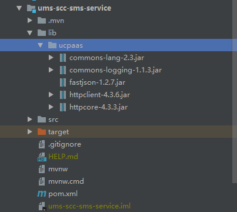

在springboot项目中可能会用到三方工具类(比如接入短信网关时给出的工具jar包)，这时候需要在springboot项目中手动引入进来
1. springboot工程目录, lib/ucpaas 下是三方jar

2. 修改 pom.xml
<dependency>
<groupId>com.ucpaas</groupId>
<artifactId>commons-lang</artifactId>
<version>2.3</version>
<scope>system</scope>
<type>jar</type>
<systemPath>${project.basedir}/lib/ucpaas/commons-lang-2.3.jar</systemPath>
</dependency>
<dependency>
<groupId>com.ucpaas</groupId>
<artifactId>commons-logging</artifactId>
<version>1.1.3</version>
<scope>system</scope>
<systemPath>${project.basedir}/lib/ucpaas/commons-logging-1.1.3.jar</systemPath>
</dependency>